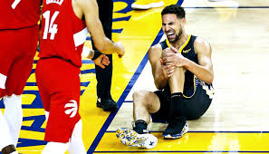
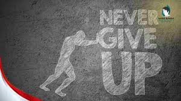

Perkenalkan, nama saya Ardell Aurelio Kansha. Saya dari SMA Negeri 9 Yogyakarta. Saya suka bermain sepak bola, basket, dan olahraga lainnya. Akan tetapi, saat saya duduk di bangku SMA, saya mengalami tragedi kurang menyenangkan. Saat bermain basket, saya mengalami cidera ACL yang menyebabkan lutut saya mudah cedera.

Cidera yang saya alami sangat mengganggu karena saya tidak bisa berolahraga sesering dulu. Akan tetapi, saya tidak mau menyerah dengan keadaan. Saya melakukan penguatan dan beberapa treatment untuk memperkuat otot lutut saya. Walaupun tidak bisa sembuh 100%, treatment dan penguatan otot membantu mengurangi kemungkinan cidera saat berolahraga.
